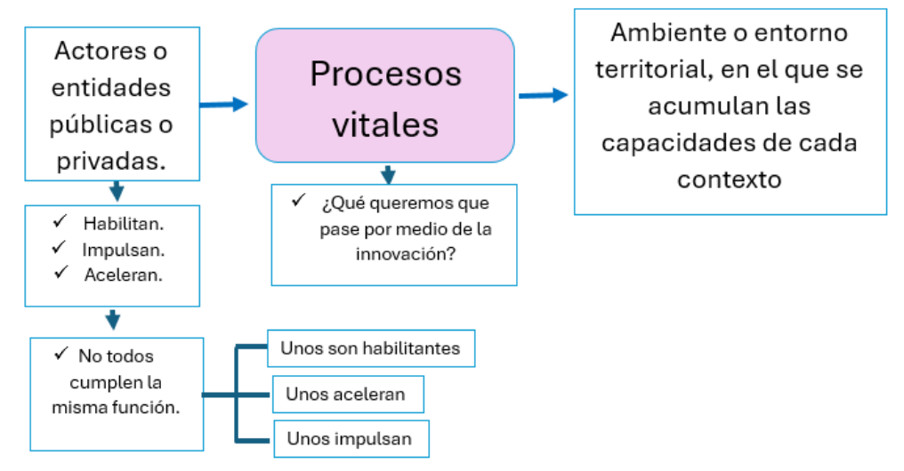

Se define como ecosistema de innovación a la interacción entre los diferentes elementos que constituyen el campo educativo como lo son actores, recursos, políticas e instituciones.
Se compone de:
- Actores o entidades:
- Habilidades
- Puede habilitar procesos positivos o negativos.
- Impulsores
- Aceleran o frenan el desarrollo.
- Procesos vitales
- Se van dando hechos vitales.
- Ambiente o entorno territorial
- En el que se acomula las capacidades de cada contexto regional.
- Hay que tener las capacidades para que los procesos vitales se puedan dar.
- Los actores que permanecen en un ecosistema son fundamentales para su crecimiento y desarrollo.
- Relación entre aceleración , el desarrollo de ecosistemas y la creación de capacidades.
- Un ecosistema debe enfocarse en desarrollar habilidades que permitan a los actores responder a situaciones futuras.
⭐ Concepto clave: La competitividad la generan los habitantes.
Modelo de movilización ecosistémica (desde los actores)
Descriptores de capacidad propia
- Dependen del ecosistema
- Los habitantes del ecosistema
Descriptores de capacidad sistémica
- No depende del ecosistema
- Acelera o impulsa descriptores de capacidad propia
- Pueden ser empresas que llegan al ecosistema
Como los actores comparten capacidades.
- Un descriptor nutre en capacidades al otro.
- La clave de la innovación está en fomentar una relación abierta en donde se beneficien tanto las empresas como la comunidad.
Ecosistema relacionado con la educación
⭐ La educación es para transformar y dignificar la vida.
⭐ ¿Cuál es el cuello de botella que no me deja salir de mi zona de confort?
Aspectos fundamentales
- La educación es clave para transformar situaciones adversas y reducir la pobreza.
- Mejorar la calidad educativa puede generar un impacto significativo en la vida de las personas.
- Es importante y necesario un ecosistema educativo en donde se integren descriptores y actores relevantes.
- Es importante la creación e implementación de políticas públicas adecuadas que apoyen este proceso.
Modelo ecosistémico ajustado basado en agentes
Simula las interacciones entre agentes.
Identificar a los agentes
Interacciones entre los agentes
Detalle de los componentes:
Ciclo de acción para la Sucesión del Ecosistema
Un ecosistema es el lugar donde convergen diversos elementos que interactúan entre sí y que permiten el crecimiento y desarrollo de una sociedad.
Constituyentes del ecosistema
Los desarrolladores o Impulsadores
Son todos aquellas acciones que impulsan el movimiento del ecosistema de manera permanente para asegurar la sustentabilidad de éste.
Los descriptores sistemáticos
Son factores que impulsan o activan el hecho vital.
Aceleradores o impulsores
Acciones que activan el desarrollo vital y que dependen de sus capacidades sistemáticas.
Descriptores propios
Acciones que dinamizan la educación y ejecutan el hecho vital.
Ecosistema
Es cada uno de los conjuntos de entidades,procesos vitales y factores que existen en contextos territoriales donde hay:
